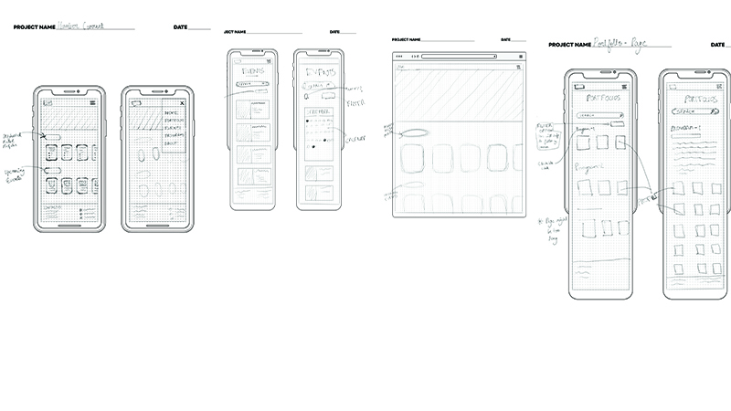
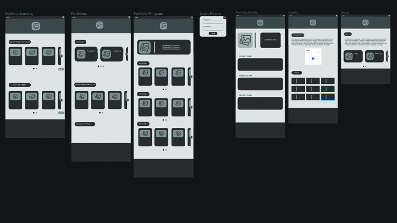
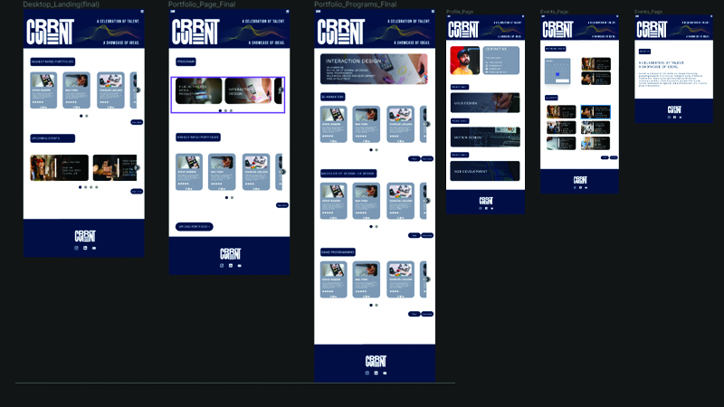

Humber Current Redesign
Karthik | 2023 |
Humber Current is a webapp by Humber where student portfolios can be viewed. The UI for Humber current was not the best so I decided to redesign it for the better. This web app is used by recruiters, future students and current students, so I tried to create a UI that caters to them. I have provided some mockups to the design below.
App Research
Humber Current, a web application by Humber, serves as a platform for students to showcase their portfolios. Recognizing the importance of user experience, I embarked on redesigning the UI to better cater to recruiters, prospective students, and current students. This involved delving into app research to understand the brand identity and user needs, conducting competitor and SWOT analyses to identify areas of improvement, and crafting user personas to guide design decisions.
Ideation and Sketching
Building upon the insights gained from research, I brainstormed and sketched multiple ideas to define the layout and functionalities of the Humber Current web app. These sketches served as the foundation for creating low-fidelity wireframes, ensuring that the final design would be both user-friendly and visually appealing.
Low Fidelity Prototype
After collecting insights from the research, I turned those ideas into a simple prototype. This early version of the app let me quickly test different features. By keeping it basic, I could get feedback from fellow designers and mentors, which helped shape the next steps in development.
High Fidelity Prototype
Building upon the insights gained from the low-fidelity prototype, I advanced to the development of the high-fidelity version of the Humber Furnitures app. This phase involved adding more details and interactions to create a more realistic representation of the final product. By incorporating visual elements, interactive components, and refined user flows, the high-fidelity prototype provided a comprehensive preview of the app's functionality and user experience.